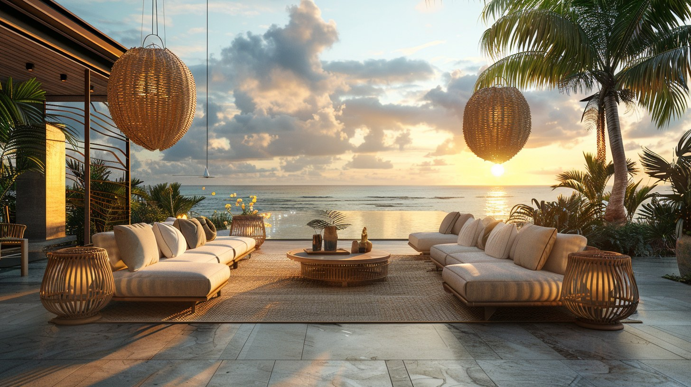

Aménagement extérieur Guadeloupe : mobilier et déco de jardin
Mobilier, barbecues, piscines, décoration : l'aménagement extérieur Guadeloupe selon Jardiland transforme votre terrasse en véritable pièce à vivre. Nos équipes de Baie-Mahault et des Abymes vous accompagnent de A à Z.
Sous notre climat, l'extérieur se vit toute l'année. Salon de détente, espace repas, coin baignade : votre terrasse a plusieurs visages, et nos rayons s'adaptent à chacun. Encore faut-il choisir du matériel pensé pour les UV, l'humidité et le sel marin.


Trois univers pour aménager votre extérieur
Tout pour recevoir, se détendre et profiter du dehors, réuni dans un même magasin.
Mobilier de jardin
Salons, tables, chaises, transats et parasols : un mobilier extérieur Guadeloupe sélectionné en bois exotique traité, rotin synthétique et aluminium, pour résister durablement au climat tropical.
Barbecues et planchas
Du barbecue à charbon traditionnel au combiné gaz-plancha haut de gamme : de quoi recevoir famille et voisins autour de la cuisine extérieure, un vrai art de vivre antillais.
Piscines et bassins
Piscines hors-sol en kit, kits enterrés, spas et bassins ornementaux : la fraîcheur à domicile, accessible aux particuliers, avec tout le nécessaire pour l'entretien.
Réussir son aménagement sous le climat tropical
Un bel extérieur dure dans le temps quand on choisit les bons matériaux et qu'on pense l'espace selon ses usages réels.
Choisir des matériaux qui durent
UV, humidité et embruns mettent le mobilier à rude épreuve : ici, six mois équivalent à cinq ans en climat tempéré. Privilégiez l'aluminium thermolaqué, le rotin synthétique de qualité et les bois exotiques imputrescibles. Vos achats traverseront les saisons sans faiblir.
Penser l'espace selon vos usages
Combien de convives ? Plutôt repas ou détente ? Terrasse exposée ou abritée ? Nos conseillers vous aident à dimensionner mobilier, barbecue et zone de baignade en fonction de votre espace et de votre mode de vie.
Vos questions, nos réponses
Quel mobilier résiste au climat de la Guadeloupe ?
L'aluminium thermolaqué, le rotin synthétique de qualité et les bois exotiques comme le teck ou l'eucalyptus FSC sont les plus durables. Évitez le fer non traité, qui rouille en quelques mois, et les plastiques bas de gamme, qui se fissurent sous les UV.
Peut-on installer une piscine hors-sol soi-même ?
Oui, pour les modèles tubulaires et la plupart des kits. Comptez d'un jour à deux semaines selon le type. Nos conseillers vous expliquent chaque étape, du choix de l'emplacement au traitement de l'eau.
Par où commencer son projet ?
Apportez quelques photos et les dimensions de votre terrasse. Nos équipes, à Baie-Mahault comme aux Abymes, vous aident à concrétiser un aménagement cohérent et durable.
Venez nous rendre visite en magasin
Baie-Mahault ou Les Abymes : nos 25 conseillers vous attendent six jours sur sept.
Voir nos magasins